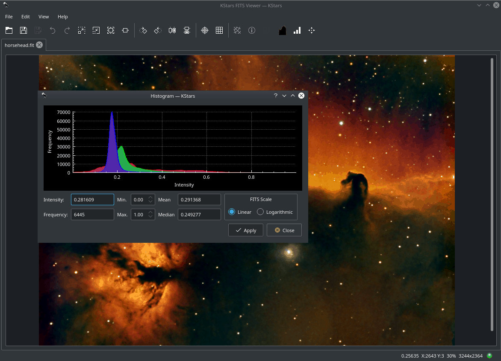

- Histogramme
- 
Affiche un histogramme FITS à plusieurs canaux. L'utilisateur peut changer l'échelle de l'image en définissant facultativement une limite supérieure et inférieure pour la région coupée. L'opération de changement de l'échelle (linéaire, logarithmique ou racine carrée) peut ensuite être appliquée à la région entourée par les limites supérieure et inférieure.
- En-tête FITS
Affiche les valeurs et les mots-clés FITS dans une table en lecture seule.
- Statistiques
Fournit des statistiques simples pour les valeurs minimales et maximales de pixel et leurs emplacements respectifs. La profondeur, la dimension, la moyenne et l'écart-type FITS.